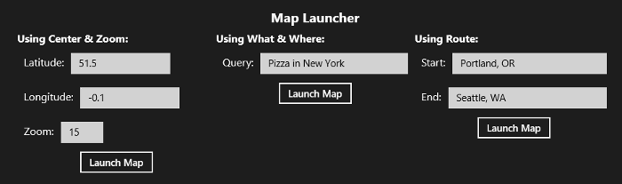
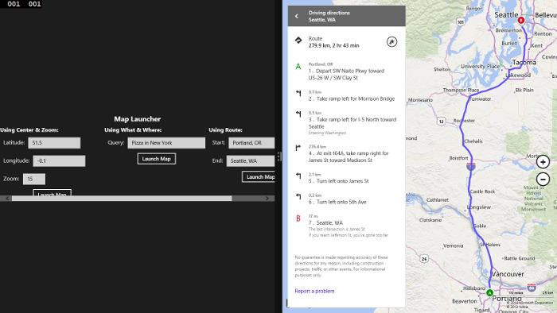
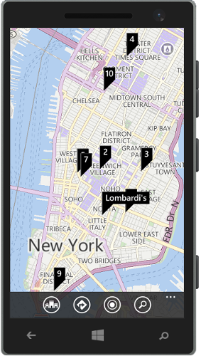

At the Microsoft //Build/ Conference last April, the Windows Phone 8.1 SDK (WP8.1) was released as a preview. With the release of this SDK one of the new templates added to Visual Studios now allows you to create universal apps. Universals apps to build an app for Windows and Windows Phone while at the same time being able to share code, user controls, styles, strings, and other assets between the two projects in Visual Studio. This saves time having to develop code for each platform. You can find more information on creating universal apps here.
In the past we wrote a blog post about being able to launch the built in Maps app in a Windows Store app using a process called Protocol Activation. The Maps app in Windows is registered for protocol activation and the URI schema is documented here. This same schema is supported in WP8.1 apps as well. In this code sample we are going create a set of reusable tools inside of a universal app for launching the maps app in Windows 8 and WP8.1.
This code sample is for blog post which you can find here.
Description
The code sample contains a shared class that launches the built in Maps app from the Windows & Windows Phone apps. The shared folder also contains a user control for testing out this class. The user control looks like this:

You can edit the fields in the forms or simply press one of the buttons to launch the map. When using the Windows app the map will load beside the app. Here is a screenshot of the app when calculating a route from Portland to Seattle.

When using the Windows Phone app the map app will load up and take the full screen. If you press the back button you will be able to get back to your app. Here is a screenshot of the map app after doing a “What & Where” search for “Pizza in New York”.
